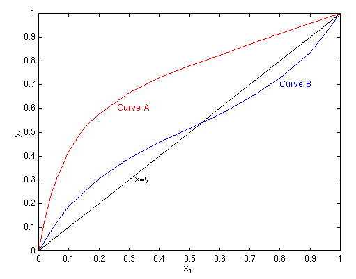
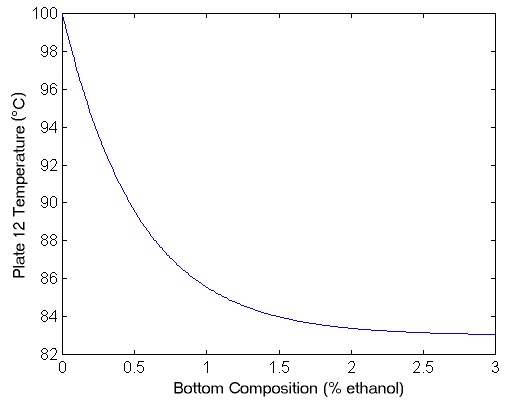

|
You are here : Control System Design - Index | Simulations | Distillation Column Control | Part 1 Distillation Column Control - Part 1Before continuing, make sure you have read Chapter 19 and Chapter 24 Design of ColumnsThe design of multistage columns for binary mixtures can be accomplished graphically, via equilibrium curves. This is called the McCabe-Thiele Method. Equilibrium curves plot the volatility of components in a mixture; that is, the proportion of species 1 in the vapour phase (y1) compared with the proportion of species 1 in the liquid phase (x1). The figure below shows two common curves: curve A is a species with normal volatility, and curve B is a system with a homogeneous azeotrope. The curves allow us to determine y1 from x1 given constant temperature and pressure.  The azeotrope indicates that a component that is more volatile at low
x1 becomes less volatile at high x1 (above the
azeotrope). This limits the separation that can be achieved between
components. The McCabe-Thiele Method allows the designer to determine the number of trays needed to distil a mixture to the required purity. As well as the equilibrium curve, other factors such as the feed quality (i.e. the thermal condition of the feed, which could be subcooled, saturated, superheated etc), the ratio of liquid to vapour flow and the proportion of species 1 in the feed are used in distillation column design. Based on these calculations, and the required spacing between plates, the theoretical height of the column can be determined. For example, for a certain configuration the required number of trays for an ethanol-water mixture may be 60. At a spacing of 25 cm, this will give a height of 15 m. This may be excessive, and so the usual practice is to set the number of trays and then set the reflux ratio L/D. e.g. for our example the number of trays are set to 12, and the reflux ratio is then set to 5 (5×12 = 60). Thus only 1/5th of the product is being drawn out at any time, which means that product is recirculating through the column about five times. Thus it is important to have a fixed reflux ratio in steady state. The optimum feed tray can also be determined using this method. Control ConfigurationAs the diagram shows, there are four valves which are used to control the flow rate of B (the bottom product), the temperature of V (the boilup), the flow rate of L (the reflux) and the flow rate of D (the distillate). The system as shown above has four inputs and four outputs:
The overhead vapour VT is also generally considered an input variable and is mainly used to control the column pressure. Since this is usually a self-regulating loop, we will ignore it in this discussion. Obviously, it is desirable to maximise the purity of the top and bottom products. Normally in industry, the control variables are set manually by human operators. Some plants use automatic control for only one product, and manual control for the other. Manual control can result in overpurification or loss of valuable product. These difficulties can be overcome by using dual composition control, i.e. automatic control for both products. There are some difficulties involved in designing a dual composition controller. In particular, the system is both strongly nonlinear and strongly interactive. Also, the system has a very sluggish response, and there are many problems with measuring the output variables (including dead times for composition measurements). Choosing the control structure is the most important step in designing a controller for the system. The column pressure and reboiler and condenser levels must be controlled very carefully to maintain stable operation. The control systems for these variables are called inventory controllers. This leaves two degrees of freedom to control the top and bottom concentrations. Deciding the control structure then amounts to choosing which two inputs will control the compositions. The most common is called the LV configuration, where the reflux flow rate L is used to control the composition of the top product, and the boilup temperature V is used to control the composition of the bottom product. In this case, the distillate flow rate D and bottom product flow rate B are used to control the levels of the condenser and reboiler respectively. The variables L and V are the ones most likely to be used by a manual operator to control the product compositions. Another common choice is the DV configuration, where the distillate flow rate D is used to control the composition of the top product, and the boilup temperature V is used to control the composition of the bottom product. For this configuration, the reflux flow rate L and bottom product flow rate B are used to control the levels of the condenser and reboiler respectively. System Model and Control DesignAs a real example we will describe a case study based on a pilot scale distillation column in Chemical Engineering at Sydney University (click here for photos). This column has been used for joint cooperative work between Electrical and Computer Engineering in Newcastle and Chemical Engineering at Sydney for the past 3 years. Assistance from Professor Romagnoli of Chem Eng Sydney is particularly acknowledged in supporting this collaboration. The joint work focused on several issues including - multimodel control, autotuning of controllers and soft sensors for composition. Much of the detailed work was done by Julio Rodreguez who also provided assistance in constructing this page. For purposes of illustration , we take a simple linear control problem motivated by work on this pilot column. The pilot column in question has twelve plates and separates ethanol and water. The goal in controlling the column is to control the concentration of the top and bottom product However, while we can measure the top product concentration, it is difficult to measure bottom product concentration. Instead, we measure the temperature of the bottom plate and use a conversion to give us the bottom concentration. An approximate model of the system for the LV control configuration is
Where y1(s) is the mole fraction of ethanol in the overhead vapour, y2(s) is the temperature (in degrees celcius) of the bottom plate, u1(s) is the reflux flowrate (in L/min), and u2(s) is the reboiler steam pressure (in kg/min). Note that these time constants are presented in minutes rather than seconds, since this process is very slow (like most chemical processes). Note also that the composition of the feed is fixed at some point. (Normally the feed composition is a disturbance in the system.) To convert between bottom temperature and bottom concentration, we use the following graph.  Note also that this model is a linearisation, and is only valid in a specific operating range. Obviously the temperature can never exceed 100°C (since then there would be no liquid, only vapour). This model is specifically for the LV configuration, and the model assumes that the inventory controllers work well. The next step is to design an appropriate controller for the system. Firstly, we will consider controlling the column with two decentralised PID controllers. The obvious choice is that we control the top concentration with reflux L and the bottom concentration with boilup V. The controller for the plant then is
Since this controller is decentralised, if we change the set-point for one concentration (or a disturbance appears), then the value of the other concentration will be affected. Java Applet SimulationBelow is a Java applet which simulates the above distillation column. The controllers in this example are two decentralised PI controllers, with kp = 1 and ki = 0.25 for the top concentration control and kp = 1 and ki = 0.15 for the bottom temperature control. The red plot shows the bottom temperature on a scale from 0°C to 100°C and the blue plot shows the top concentration % on a scale from 0 to 100. The colour of the plates indicates their temperature, with blue being coolest and red being hottest (Note that the coolest temperature is 85°C which is still quite hot! Currently, all plates are shown as being the same temperature as the bottom plate. The time scale is accelerated, with 5 minutes of simulated time occurring every second.
As you can see, a decentralised PID controller is not effective at decoupling the outputs. To achieve decoupling, we must turn to more advanced ideas in MIMO control, as covered in chapter ??? of the book. |